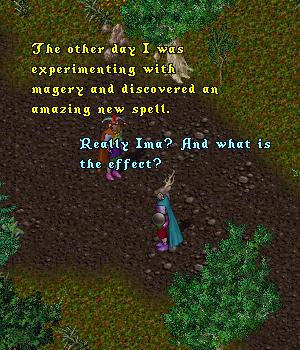
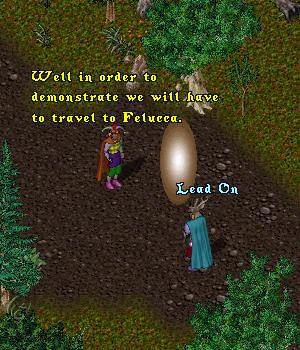
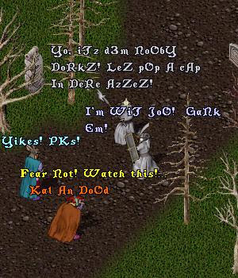
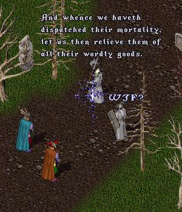
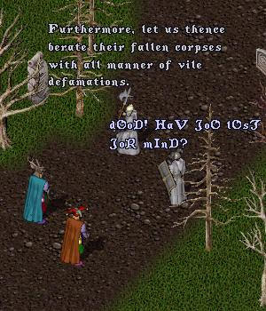
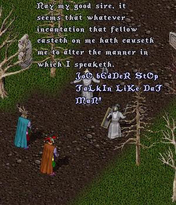
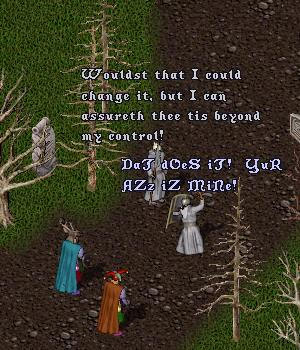
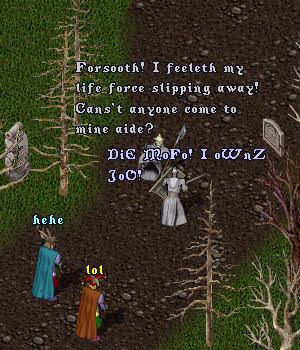

Episode 128: Who Says DoOdZ can't Roleplay? It seems that there aren't only sixty-four spells in UO after all. As this episode opens ImaNewbie is explaining to ImaDufus about an amazing new spell he has discovered.


Strolling down a pathway in Felucca, it is not long
before our two adventurers are confronted by two
deathrobe-clad individuals who clearly do not
have pleasant conversation on their minds.





